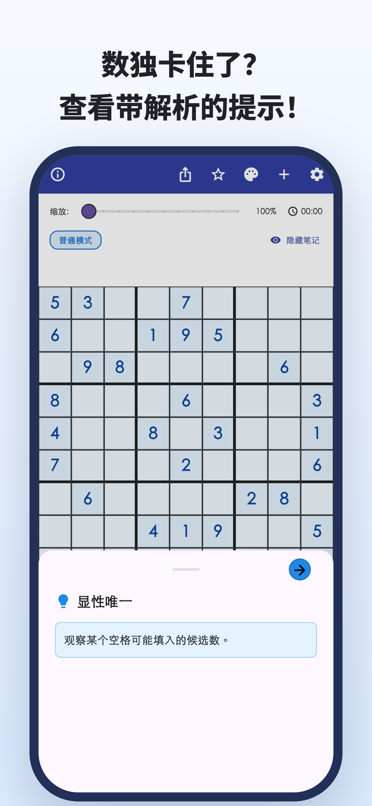
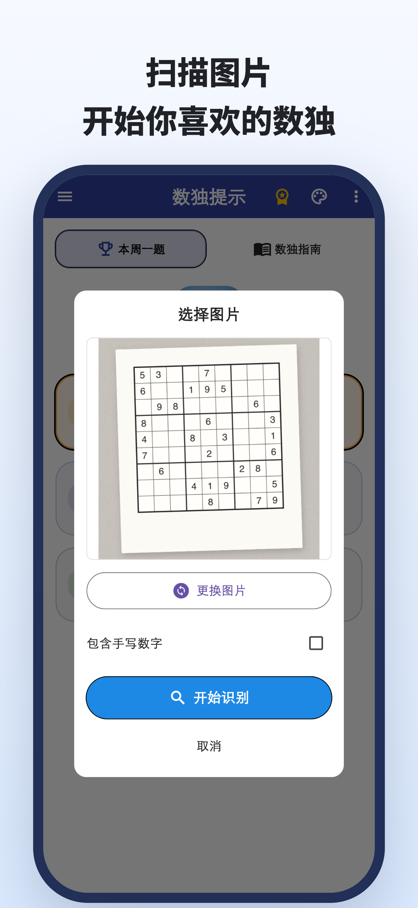
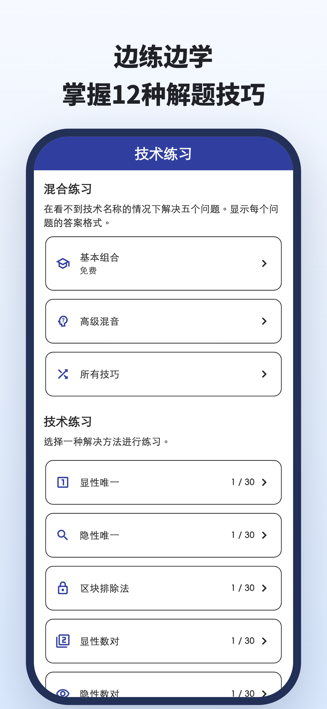
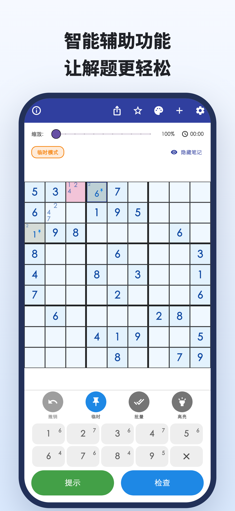
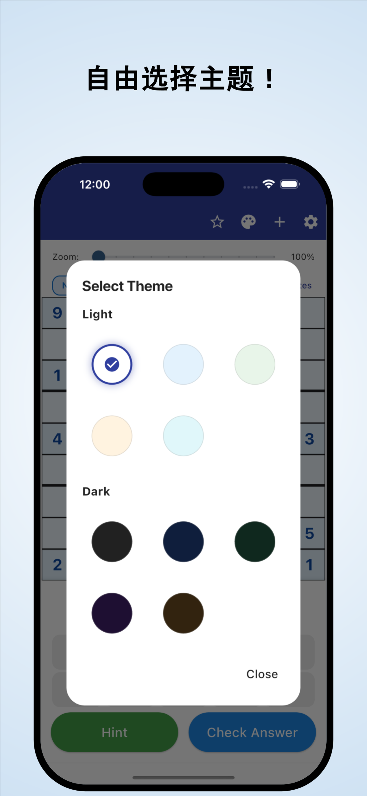

“接下来该看哪里？”
反复检查棋盘，还是填不出数字，
一直卡在同一个地方。
相机识别 · 带理由的提示
报纸、杂志上的题目，也能拍照导入。
理解数字为何能填在这里，再继续自己解题。
iPhone、Android / 免费下载 · App 内购买





解题时，你也遇到过这些情况吗？
反复检查棋盘，还是填不出数字，
一直卡在同一个地方。
为什么这里一定是这个数字？
照着答案填，并不能满足好奇心。
想把手头正在做的纸上数独，
直接放到应用里继续解。
把卡住的地方，变成下一条线索
从报纸或杂志的照片中识别数独，减少逐个输入数字的麻烦。
从图片识别通过提示了解数字能填入的理由。不只是补上答案，也为下一步思考提供线索。
带理由的提示查看各类技巧的讲解和练习，再练习自己找出学过的技巧。
按技巧练习献给享受独立解题乐趣的你
导入平时在做的题目，从停下的地方继续。
理解卡住之处的理由，再自己往下解。
无论刚入门，还是想学下一个技巧。
阅读 · 体验 · 练习
先在浏览器里试试。
阅读讲解，或完整挑战一道题。
注意蓝框格子，打开提示看看。
下一步提示
请检查空格中的候选数。
这是用于体验一步解法的网页示例，与应用中的显示不同。
数独卡住时。
下载 数独提示
免费下载 · App 内购买
可以免费下载和体验。提示、答案检查、图片识别等有使用次数限制；部分使用需要观看视频广告。
Premium 为按月或按年订阅，可移除广告，并无限使用提示和答案检查等功能。即使订阅 Premium，图片识别仍有上限。价格及使用条件请在应用内确认。
可以导入数独的照片。开始前请检查识别出的数字，并修正错误。支持标准的 9×9 数独。
可以挑战应用内的题目，也能查看技巧讲解并练习。部分题目和练习需要 Premium。
除了本页的一步演示，还能在浏览器中完整挑战一道题，并阅读技巧讲解、进行练习。
数独指南